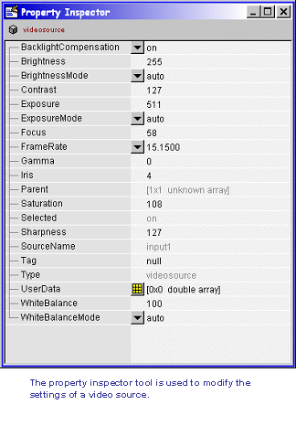

Image Acquisition Toolbox Tutorials
| Image Acquisition Toolbox Tutorials |
These tutorials highlight some of the general tasks when working with the Image Acquisition Toolbox.
Identifying Available Devices
Identify installed image acquisition devices using the IMAQHWINFO function.
Determine device information and capabilities.
Accessing Devices and Video Sources
Access image acquisition devices using the VIDEOINPUT function.
Select and access the current video source using the GETSELECTEDSOURCE function.
Working With Properties
Access and configure a video input object's properties using the GET and SET functions.
Access property help and information using the IMAQHELP and PROPINFO functions.
Managing Image Acquisition Objects
Locate image acquisition objects using the IMAQFIND function.
Remove image acquisition objects from memory using the DELETE and CLEAR functions.
Reset the Image Acquisition Toolbox using the IMAQRESET function.
